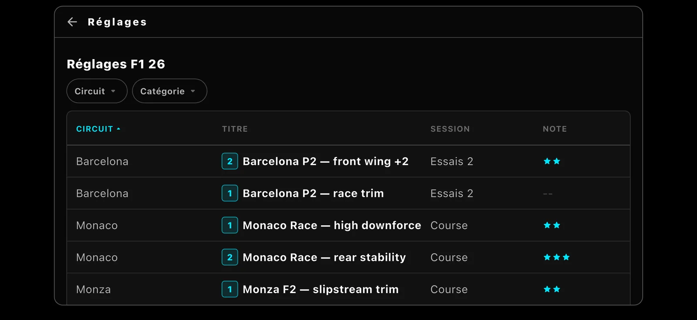
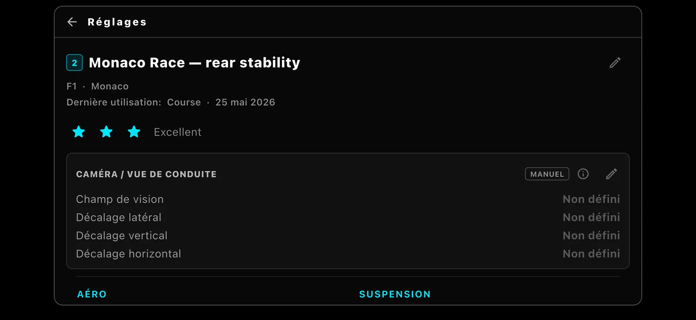

Gratuit
- Tous les réglages utilisés, listés par jeu, puis par circuit, nom, note et session
- Chaque nouveau réglage enregistré avec sa session
Comment ça marche
JMD saisit vos réglages automatiquement. Notez-les, nommez-les et retrouvez le bon au bon moment.
Vous ne tapez jamais un réglage. JMD enregistre le réglage utilisé à chaque session et en bâtit votre bibliothèque. Ouvrez-la depuis l’écran d’accueil avec Voir les réglages, depuis l’onglet SETUP du mur des stands, ou depuis la section des réglages de Préparer la session.

La bibliothèque montre un jeu à la fois, sous un titre comme Réglages F1 26, pour ne jamais charger par erreur un réglage d’un jeu plus ancien. Si vous avez des réglages de plusieurs jeux, un sélecteur de jeu apparaît au-dessus du titre. Le tableau affiche circuit, titre et note, plus la session en paysage. Il s’ouvre trié par circuit ; touchez un en-tête de colonne pour trier, et touchez-le de nouveau pour inverser l’ordre. Les filtres réduisent la liste par circuit et catégorie (F1 ou F2).
La note et le nom appartiennent au réglage lui-même, pas à une seule session. Notez-le dans l’historique et la bibliothèque affiche les mêmes étoiles, et inversement. Dans la bibliothèque, touchez l’en-tête NOTE pour mettre vos meilleurs réglages en tête.

Sur l’écran d’un réglage, vous pouvez le renommer, voir combien de sessions l’ont utilisé et quand il a servi pour la dernière fois. Une section CAMÉRA / VUE DE CONDUITE, marquée MANUEL, permet de noter votre champ de vision et les décalages de caméra. Le jeu n’envoie pas ces valeurs ; vous les saisissez vous-même.